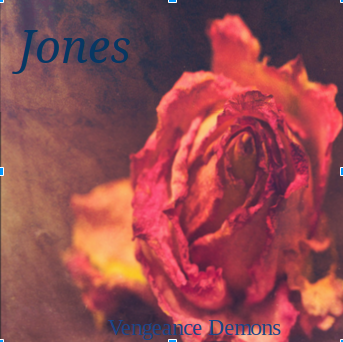

Challenge: Design a Band
Challenge Information
Write in your own information about the challenge. Ideas to include:
- ---What is design thinking? Why are we studying it?
- ---What are the steps of the DEEP design thinking process?
- ---Summarize the steps that we did in class to make the album cover.
Design thinking is when you create art for other people or yourself. We are studying it bevause it will help us become better problem solvers.
Discover We did this as a class activity we had to write down all the band names that we know and put them all on posty notes and stick them to the back table. Then , we all went to check them out and pick the ones that stand out the most to us. That helped us to start using our brains to start thinking up new ideas. Empathize In order for people to be interested in art or a band the producer has to think about what the people like and want to see. We as a class went around asking each other if we like the font Serif or San Serif. The majority of people chose San serif because that was the one they liked the mot and interested them . We also asked what types of images they like between abstract and realistic and what color was there favorite. Then we learned what they like and compared it to our interest to . Experiment We randomly chose our band names from two wikipedia links and a quote from a random show and also a picture from flickr.With all of this we designed a band name and a album cover and the album name which led us to Creating our own very band. Production For production we had to write a bio of how the band came to be and who the members of the band are. Also , We had to create a webpage for our band on C9and from there we are finished with our project.
Album Cover
Band Biography
The members in my band are me , Marilyn, Martin, Leydi , Maria, Kaylan , Melany . The band came to be when we met at a local event when we all shared one thing in common which is we like Abel Tesfaye . We like to mainly stick to one genre which is r&b and pop because they suit us more and we enjoy writing it. Our #1 hit single is Vengeance demons which was 1 on the music billboard which went platinum. We got discovered by music producer John Legend and he gave us a record deal. We all come from San Jose, California a city in the san francisco bay.All of us have different backgrounds but we all have one thing in common which is that we are teens that come from a troubled town surronded by violence,drugs,gangs & poverty.Marilyn and me are cousins ,leydi , martin,maria & melany are good friends from high school.